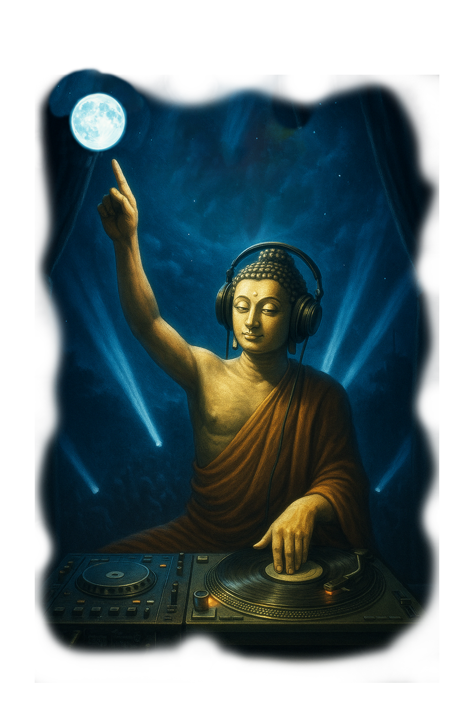

Discoteca Nirvana — Panel Shaolin Pro+™
Idea de mezcla: 🌿 Naturaleza + ✨ Bendición + 🎭 Escena (volumen bajo).
Presets por Juego
Elige tu campaña: el DJ Buda adapta el clima sonoro al tipo de batalla interior.
Shaolin Pro+ — Efectos por categoría
Dispara varios sonidos a la vez. Un LED verde indica qué pista está sonando.